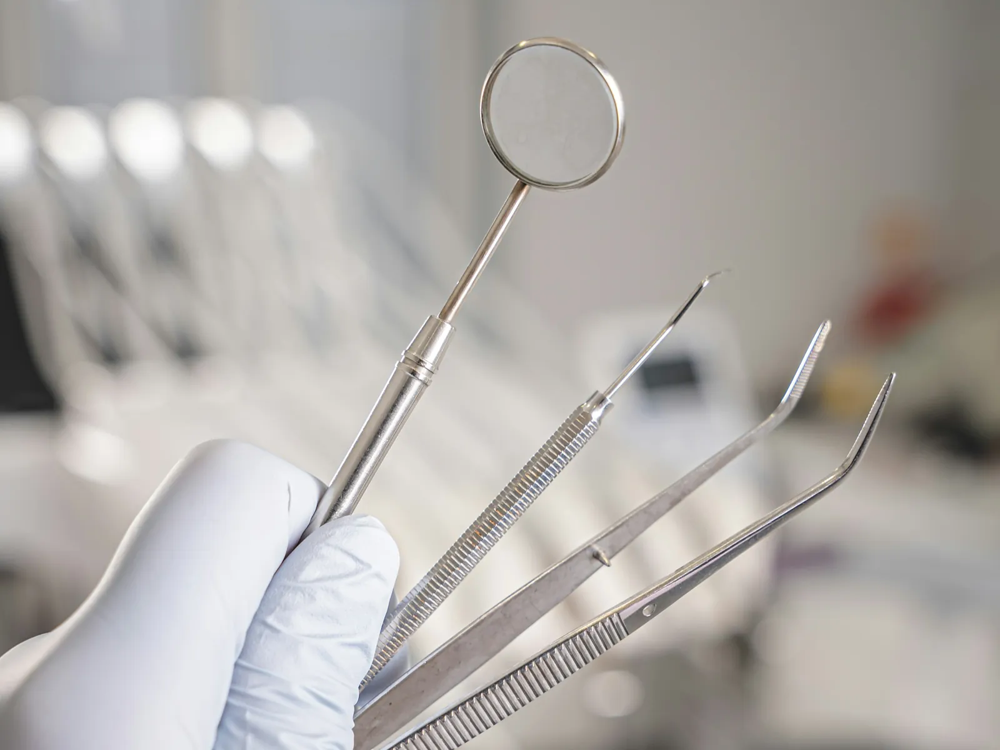

홈 › 종합진료
종합진료

치아를 뽑기 전에 살릴 수 있는지 먼저 봅니다. 충치, 보철(크라운·브릿지), 틀니, 치주(잇몸), 사랑니, 턱관절, 소아 진료와 자연치아 살리기
한눈에 보기
- 진료 층
- 2·3층
(치주 2층 · 소아 3층) - 진료
- 충치 · 보철 · 틀니 · 치주 · 사랑니 · 턱관절 · 소아 · 신경치료
- 장비
- TMJ-L(턱관절) · TESCERA ATL(레진 인레이)
- 비용
- 진찰 후 항목별로 미리 안내합니다


자주 묻는 질문
충치 치료와 잇몸 치료도 하나요?
충치 치료와 스케일링·잇몸 치료를 합니다. 치주 진료는 2층에서 합니다.
치아가 많이 상했으면 바로 뽑나요?
심하게 병든 치아도 뽑기 전에 신경치료나 치근단 절제술, 치아재식술로 살릴 수 있는지 먼저 봅니다.
진료시간 · 오시는 길
031-683-7575경기도 평택시 안중읍 안중로 132
- 성심주차장을 이용하시면 주차권에 병원 도장을 찍어 드려 무료로 주차할 수 있습니다
(이면도로 주차는 유료). - 본원 뒤 주차장은 자리가 좁습니다. 이용하실 때는 주차권을 받아 가셔야 나가실 수 있습니다.
진료시간
- 월
- 전체
- 오전 9시 ~ 오후 6시교정과 오전 10시 ~ 오후 6시
- 화
- 전체
- 오전 9시 ~ 오후 8시
- 수
- 3층
- 오전 9시 ~ 오후 6시
- 목
- 2층
- 오전 9시 ~ 오후 8시
- 금
- 전체
- 오전 9시 ~ 오후 8시2층 오전 9시 ~ 오후 6시교정과 오후 2시 ~ 8시
- 토
- 전체
- 오전 9시 ~ 오후 2시점심시간 없음
- 점심
- 평일
- 오후 1시 ~ 2시
- 휴진
- 일요일 · 공휴일 휴진